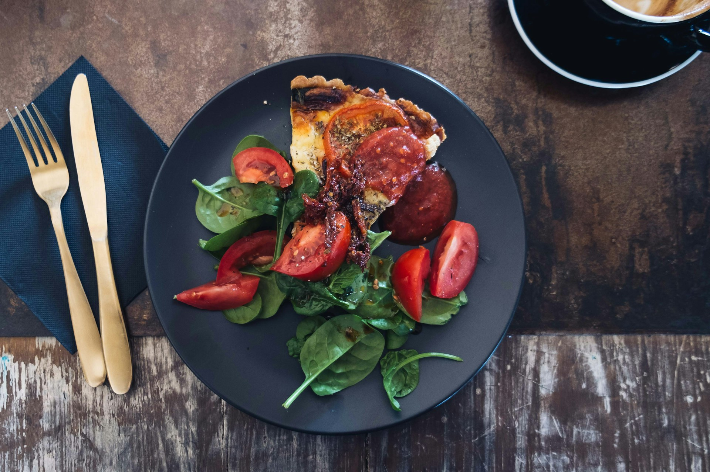

Quiche
Creamy custard nestled in a flaky pastry shell, adorned with a mosaic of savory fillings. A harmonious blend of eggs, cheese, and vegetables baked to golden perfection.

Ingredients
- Pie crust (store-bought or homemade)
- Fresh spinach leaves, washed and chopped
- Feta cheese, crumbled
- 4 Eggs
- 120-180 ml milk or cream
- Salt and pepper
- Optional: herbs like thyme or basil for added flavor
Steps
- Preheat your oven to 190°C.
- Roll out the pie crust and line a pie dish with it. Trim any excess crust hanging over the edges.
- In a skillet, wilt the chopped spinach over medium heat until it's just wilted. Remove from heat and let it cool slightly.
- In a mixing bowl, whisk together the eggs, milk or cream, salt, and pepper until well combined.
- Spread the wilted spinach evenly over the bottom of the pie crust.
- Arrange the halved cherry tomatoes and crumbled feta cheese over the spinach.
- Pour the egg mixture evenly over the spinach, tomatoes, and cheese in the pie crust.
- Place the quiche in the preheated oven and bake for 35-45 minutes, or until the center is set and the top is golden brown.
- Once baked, remove the quiche from the oven and let it cool for a few minutes before slicing and serving.
Enjoy your delicious homemade quiche!
Back to main page